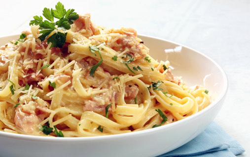

Intereses
Pelicula Favorita
Duna: Parte 2
Simplemente la mejor película de ciencia ficción de la actualidad. En un mundo lleno de CGI barato y guiones mal hechos, esta película se siente como un mensaje para Hollywood.
Videojuego Favorito

Hollow Knight
Simplemente un juegazo. La música, el estilo visual, las mecánicas, la historia... Hay muy poco que este juego haya hecho mal. Y en verdad es una experiencia bastante hermosa.
Si quitamos el Sendero del Dolor... y Deepnest...
Comida Favorita
Italiana
¿Qué es delicioso, relativamente simple de preparar, y que sabe bien preparado de forma casera o en restaurante? La comida italiana.
Los italianos tienen un lenguaje y estilo culinario inigualable. No es complicado y extravagante como la francesa, grasosa como la estadounidense, aburrida como la inglesa, y de la japonesa no hable porque ni la he probado. Además, la comida italiana tiene una enorme variedad de ingredientes y estilos a disposición.
(Aún así no supera a unos frijoles con crema y francés.)